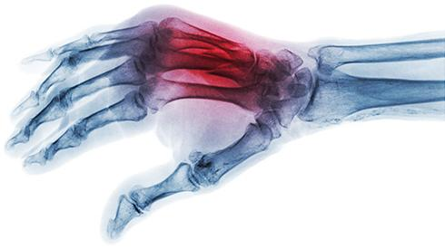

Umów się na wizytę: +48 604 420 790
(pon.-pt. od godziny 7:30-17:00)
Umów się na wizytę: +48 604 420 790
(pon.-pt. od godziny 7:30-17:00)
MENU
Dyplom lekarza uzyskałem w 1995 roku, a egzamin specjalizacyjny z ortopedii zdałem w 2005. Do roku 2009 pracowałem na oddziale ortopedycznym Szpitala Miejskiego w Elblągu jako asystent.
W 2009 roku utworzyłem w Elbląskim Szpitalu Specjalistycznym (obecnie Szpital Miejski Św. Jana Pawła II) Oddział Chirurgii Ręki i do chwili obecnej kieruję nim.
Od początku kariery lekarskiej szkoliłem się w wielu ośrodkach w kraju. Były to szkolenia przede wszystkim indywidualne, ponieważ dla mnie najważniejsza jest bezpośrednia relacja uczeń–mistrz przy stole operacyjnym.
Za najważniejsze uważam szkolenie z zakresu chirurgii ręki, mikrochirurgii i chirurgii rekonstrukcyjnej odbyte w latach 2002-2006 na Oddziale Chirurgii Plastycznej Szpitala im. Witolda Orłowskiego w Warszawie pod okiem mojego guru, dr n. med. Marka Molskiego, mikrochirurga światowej sławy.
Czytaj więcej 